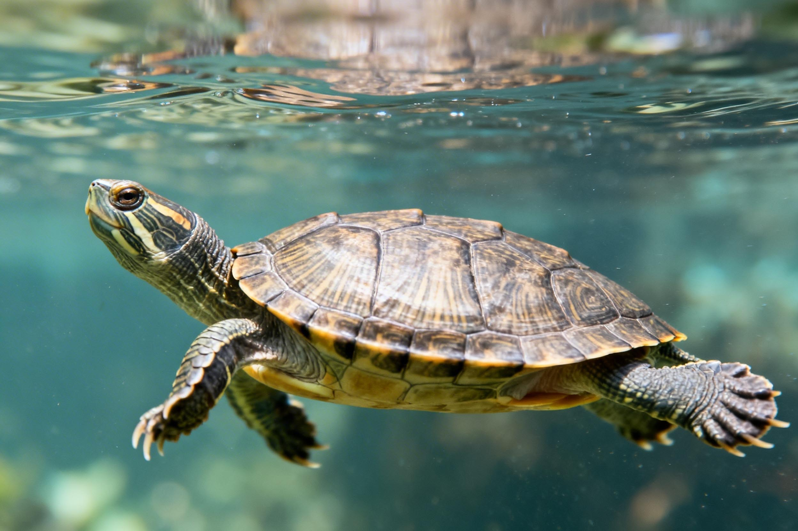
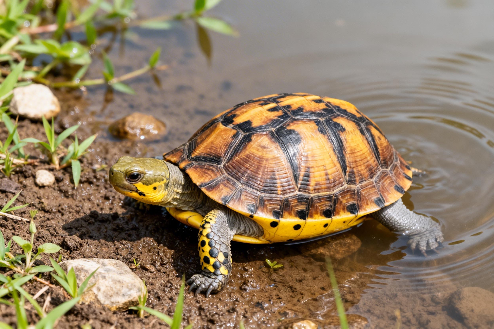

turtle · 知识库 | 综合科普
从入门到精通，认识各种龟类的独特魅力
From beginner to expert, discover the unique charm of different turtles.
苏卡达、赫曼、红腿……了解陆龟的饲养要点与品种特性。

巴西龟、草龟、蛋龟……水龟家族大揭秘，哪种最好养？

黄缘、枫叶、锯缘……它们既爱水又喜陆，饲养环境如何布置？
Sulcata, Hermann, Red-footed... Learn about care and species characteristics.
Red-eared sliders, grass turtles, musk turtles... Which one is easiest to keep?
Yellow-margined, leaf, saw-jawed... How to set up their habitat?